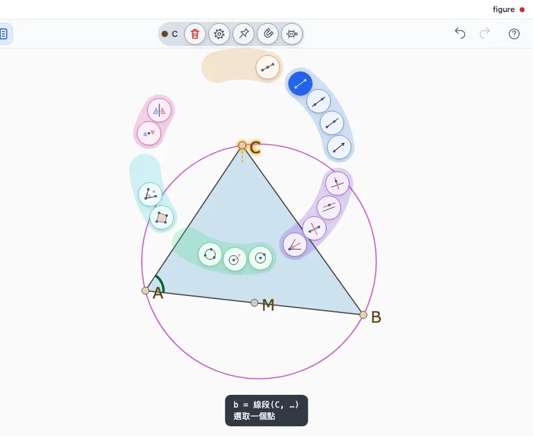

用手勢作圖
點按圖形
| 點按位置 | 結果 |
|---|---|
| 空白處 | 自由點（3D 中位於地面 z = 0 上） |
| 交叉處附近 | 兩個物件的交點，游標停留時兩者會醒目顯示（距離小於 24 px） |
| 一個物件 | 選取該物件並開啟其工具環 |
| 空白處（工具環已開啟） | 關閉工具環，不建立點 |
| 空白處或交叉處（工具面板已開啟） | 無反應，除非使用點工具 |
| 一個物件（工具面板已開啟） | 選取該物件，不開啟工具環：工具面板顯示其工具 |
文字、運算式或滑桿只會被選取：它們沒有工具環。
只依賴自由點的直線、線段、向量、圓、弧、圓錐曲線或多邊形，拖曳時會整體平移：這些自由點一起平移。
工具環

工具環只顯示適用於所點按物件的工具。每個工具的位置始終不變；不適用的工具會留下空位。工具族從上方開始按順時針排列：
| 工具族 | 工具 |
|---|---|
| 點 | 物件上的點、交點、中點或圓心 |
| 直線 | 線段、直線、射線、向量 |
| 作圖 | 垂線、平行線、中垂線、角平分線 |
| 圓 | 圓心和點、圓心和半徑、三點、球（3D） |
| 多邊形、角、軌跡 | 多邊形、角、軌跡 |
| 變換 | 中心對稱和軸對稱，作用於點或物件（多邊形、圓……） |
游標停留在工具上時，提示會顯示它將寫出的列和所需的參數：b = 線段(C, …)，「選取一個點」。對物件本身的操作（刪除、設定…）在操作列的情境區中。
選取參數
選定工具後，物件的預覽會跟隨游標，可接受的物件在游標停留時醒目顯示。在需要點的位置，可以任選一個已有的點、一個物件（建立物件上的點）、一個交叉處（建立交點）或空白處（建立自由點）。
- 多邊形：依次選取頂點，最後再選第一個頂點。拖曳頂點皆為自由點的多邊形會整體平移，除非它已固定（屬性中的固定物件）。
- 圓（圓心和半徑）：在工具環中按住圖示，移動滑鼠或手指調整半徑，放開即可建立圓。之後拖曳圓可改變半徑。
- 軌跡：在依賴於物件上的點的點或直線上提供；按一下即可建立。對於直線，繪製其包絡線，即與其各位置相切的曲線。
- 角和角平分線：第一條邊上的一點、頂點、第二條邊上的一點。
特殊情況
- 重疊的物件：會出現一個選單，列出每個物件的列；游標停留時對應物件醒目顯示。點總是優先，交叉處直接給出交點。
- 用手指：使用工具時，按住的手指只顯示預覽而不移動任何東西，抬起時才選取。可以按住圖示，一次滑動到目標。
- 視窗邊緣：工具環會移位以完整顯示，並用虛線與物件相連；圖形移動時它會跟隨物件。
- 放棄：Esc或提示中的✕。
- 移動：使用工具時，拖曳用於瞄準；右鍵總是移動物件和檢視。
- 檢視：按右鍵顯示所指物件的屬性，不放下工具，也不算作參數。